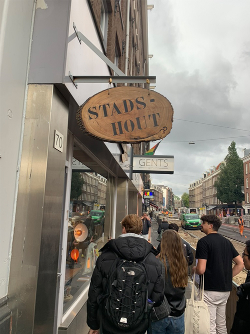

Over het initiatief
Hout van Hier zorgt ervoor dat in de regio Amsterdam geen houtsnipper verspild wordt, denk hierbij aan bomen die sowieso al gekapt moeten worden een nieuw leven te geven doormiddel van kunst of bijvoorbeeld plantenbakken en bankjes voor in de stad zelf. Hiermee willen we bereiken dat er minder geïmporteerd en geëxporteerd wordt en er gebruik gemaakt wordt van hout uit eigen stad.

Hout van Hier zorgt ervoor dat in de regio Amsterdam geen houtsnipper verspild wordt, denk hierbij aan bomen die sowieso al gekapt moeten worden een nieuw leven te geven doormiddel van kunst of bijvoorbeeld plantenbakken en bankjes voor in de stad zelf. Hiermee willen we bereiken dat er minder geïmporteerd en geëxporteerd wordt en er gebruik gemaakt wordt van hout uit eigen stad.